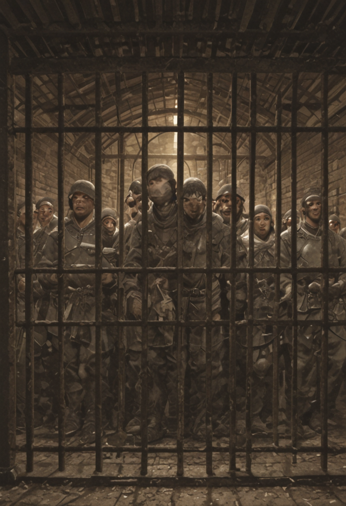
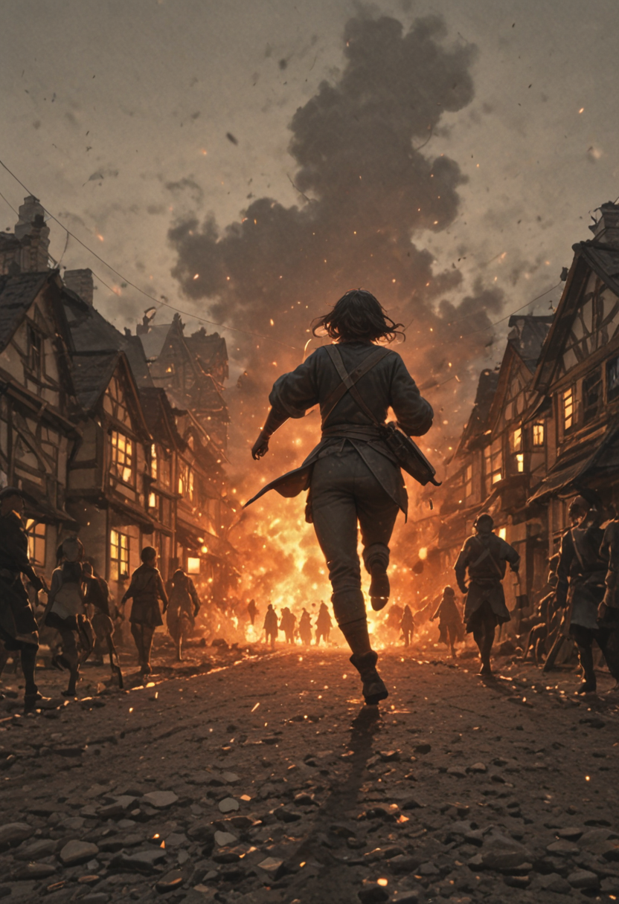

In this section, we explore the faction’s lore, analyzing its history, culture, and relationships with other factions.

The Founding of the Empire
Much has been lost in forgotten books, but it is said that the current Ruler possesses writings about the Founder himself, as well as diaries of former rulers. These claims remain speculative, however, as they have never been officially confirmed.
What is taught in history classes is that the Founder appeared suddenly as a wanderer in a small village, visibly shocked and disoriented. After adapting to life there, he gradually and significantly improved the quality of life in the settlement through innovative ideas in organization and technology, which quickly transformed the village into a small city. Despite this, he consistently declined any leadership role, claiming he was simply "not interested."

The Night of Tragedy
One day, the city was attacked by brigands who believed it to be easy prey. They were swiftly defeated and taken prisoner. Once captured, however, the people fell victim to their own sense of superiority. The brigands pleaded to be allowed to join the city, claiming they had been "forced into thievery because there was no other choice." The citizens—accustomed to progress and goodwill—forgot a crucial truth: not all people will turn good, and many will deceive.
The Founder strongly opposed their release and acceptance into the community, stating that "their eyes are the same as those of the people in my old life." The mayor and his councilors dismissed this as baseless accusation and ordered the Founder imprisoned.
That very night, the brigands revealed their true nature. The records are unclear on the exact events, but it is said that several people were killed and that some women disappeared or were left gravely wounded. Seeing fires rise from the city, the Founder broke free from his cell and witnessed the horrors of that night firsthand. He hunted down the brigands, killing those he found and declaring them "not redeemable."
What remained was the ruin of the city he had worked so hard to build—destroyed by a single mistake. From that moment, he is said to have uttered only three words: "Never again". This event will be remember as the Night of Tragedy in the history.

The Purge and the Rise
The Founder confronted the mayor, who refused to take responsibility, blaming the councilors instead. As they turned on one another in a game of accusations, the Founder proclaimed himself the new mayor. Many opposed him, but others supported him, remembering his contributions since his arrival. This conflict escalated into a brief civil war, one that ended quickly—his power was on an entirely different scale.
"I can’t protect you from yourselves."
Most who resisted his takeover were imprisoned, while those who conspired or attempted to incite rebellion were executed. A new age began. To many, the Founder became a Savior; to others, a Tyrant. Those who held the latter view were either exiled or quietly disappeared.
What is certain is that the small city became the present capital, Padineon, and under the Founder’s guidance the realm expanded—both by establishing new settlements and by absorbing other cities into his rule. Some call this period a golden age of renewal and progress; others remember it as an age of repression. Regardless, the Empire prospered.
Advisors close to the Founder later wrote that his eyes always seemed empty, as if he looked upon the world out of duty rather than genuine spirit.

The Founder's Legacy
After a hundred years, the Founder grew old and ill. Lying on his deathbed, he is said to have whispered, "No. This cannot be the end. I refuse." He laid down his armor, set aside his sword, and placed the crown upon his most trusted commander, saying:
After this, the Founder vanished forever. No one knows where he went, but his spiritual legacy endured, carrying his will forward through the people of the world.

The Dark Years: Celid and Aerin
In the history of the continent, there is a period well known to all as the "Dark Years." The Emperor of that time, Celid, was an honorable Paladin, married to a beautiful woman named Aerin. This union was welcomed with joy, as Celid was regarded as a sensitive and deeply caring individual. Unfortunately, tragedy soon followed.
A terrible plague spread across the continent. Those infected developed severe coughing and excruciating pain, and the disease was easily transmitted through skin contact, causing it to spread at an alarming rate. Sadly, Aerin herself became infected. She was bedridden, suffering constantly. While magicians and physicians desperately searched for a cure, Celid never left her side, holding her hand and witnessing her agony, seemingly immune to the plague due to his exceptional constitution as Emperor.

The Crusade of Mercy
Despite every effort, no cure was found in time. Aerin died screaming in pain in Celid’s arms. His greatest strength—his sensitivity—became his undoing. Something within him shattered. Celid came to believe that those afflicted by the plague should be killed as swiftly as possible, to spare them the torment of a slow and agonizing death like the one Aerin had endured. He held her hand, watched her struggle, and felt something inside him snap: the man who had lived to protect others now saw only one solution: mercy through death.
Thus began a crusade to exterminate all the infected, including those in other kingdoms, in the name of the "greater good" and the mercy of sparing them suffering. This marked the first documented loophole in the Founder’s Will: if an Emperor genuinely believes that their actions serve the well-being of the people, the Will does not restrain them.
Nearby kingdoms soon formed an alliance to stop Valkyrion and marched against the Emperor. Along the way, they were joined by rebels from within the Empire itself—officers and soldiers who opposed the brutal actions of their ruler.

The Fracture of the Dogma
The decisive battle took place at Padineon, where a coalition of different races and kingdoms confronted Celid. Most believed the battle to be hopeless. Yet an unexpected turn occurred: the majority of the souls bound within the sacred sword refused to strike the rebels, for they too rejected the Emperor’s will.
Weakened and abandoned by the very power he wielded, Celid was defeated. In his final moments, he questioned why others refused to "save" the plague victims as he had tried to do, why they would allow them to suffer. With bitter defiance, he placed the crown upon the commander leading the rebellion.
The aftermath left deep scars in the Empire’s relations with neighboring nations. Many remember the atrocities of those years, while others recall that even within Valkyrion, officers rose against their own ruler—proof that not all were complicit. One truth, however, became undeniable: the Founder’s Will was not infallible.